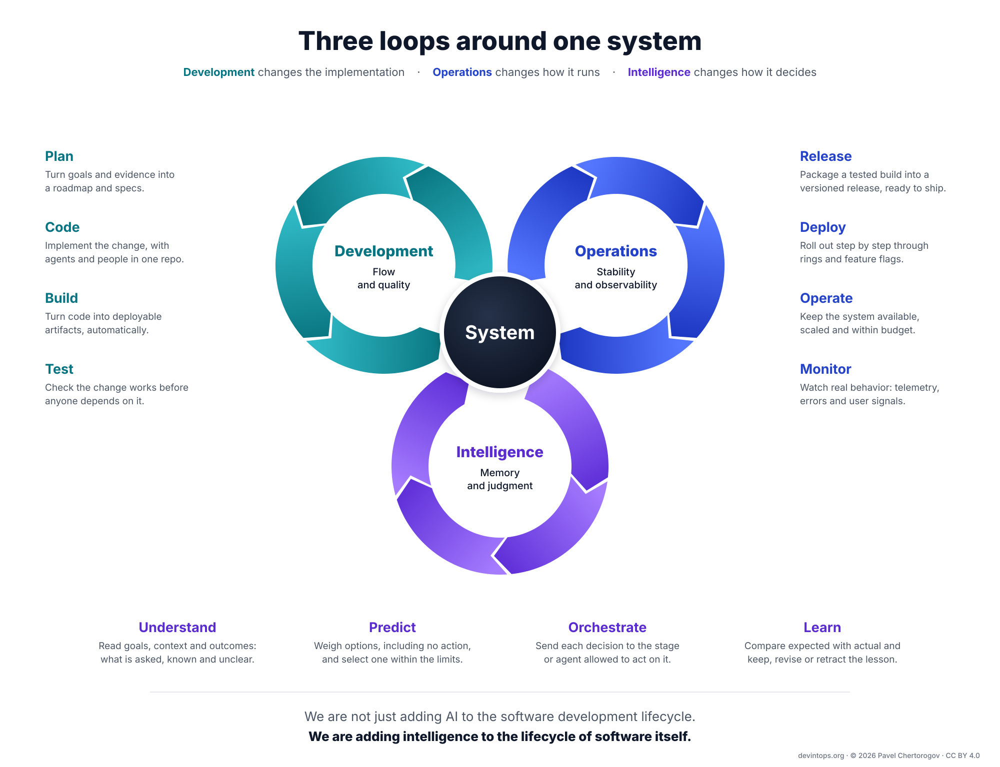
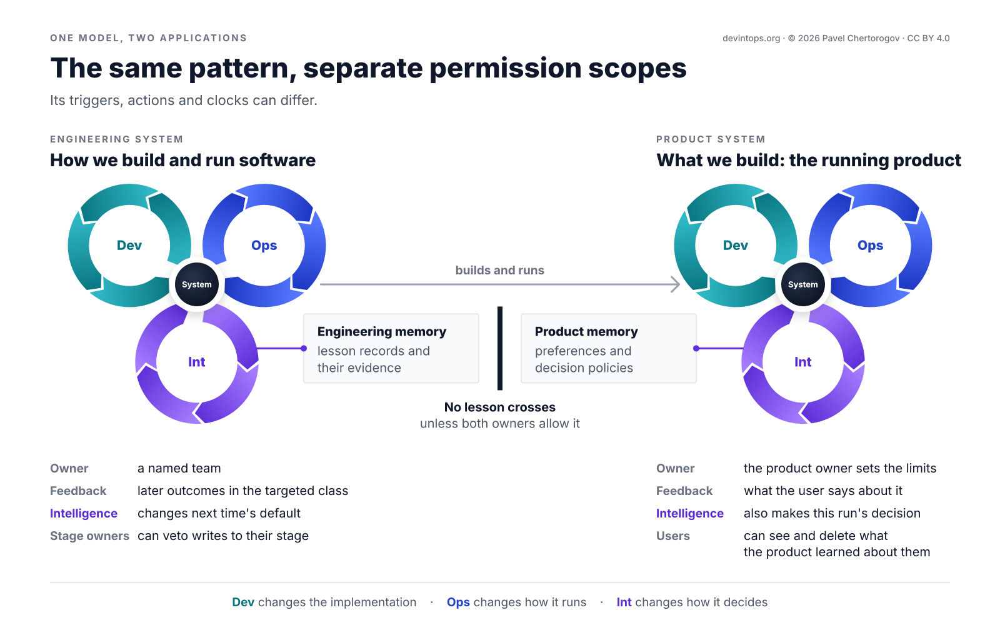
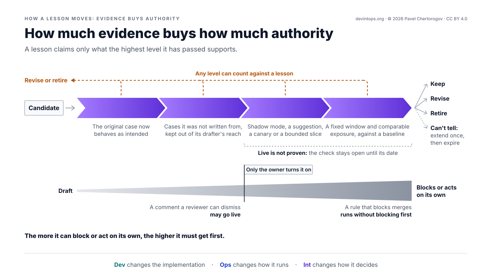
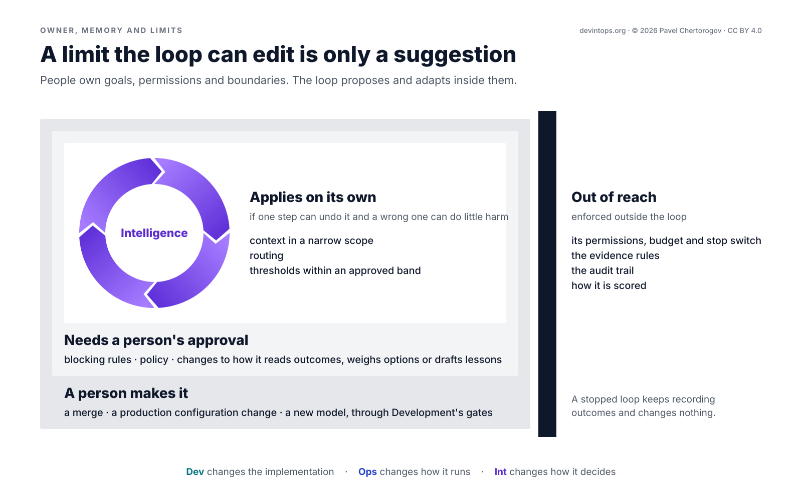
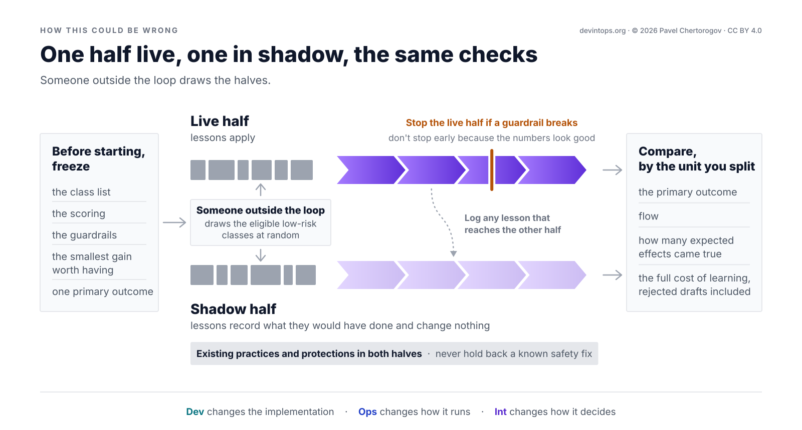

From Monovalent Dev to Bivalent DevOps to Trivalent DevIntOps
Intelligence as the third continuous loop in software engineering
This is a reconstruction candidate based on version 1.0, prepared for review, not a published update. Publication at this address or a new versioned address has not been decided. The published paper remains at devintops.org/v1/.
Abstract#
Finishing a task does not ensure that the next task benefits from it. DevOps already values learning; DevIntOps makes the state that carries learning into later decisions an explicit engineering responsibility. Development changes the implementation, Operations changes how it runs, and Intelligence changes how it decides. The third loop uses memory and judgment through Understand, Predict, Orchestrate and Learn. A pass connects a goal or outcome to a decision and evaluated experience. In engineering, that experience becomes a lesson with a source, a permitted change, an independent check and a way out. An escaped bug and a product decision show how the same logical pattern serves different systems. Evidence limits authority; people retain goals, permissions and scoring. The model combines established learning and adaptive-control practices rather than claiming to invent them. Its lifecycle-wide benefit remains untested. A randomized shadow comparison specifies what would count as improvement, failure or an inconclusive result.
What survives the task#
Retries are explicit. Persistent learning often isn't. A failed check sends work back until it passes. That can finish the task without changing anything the next task reads.
Consider an illustrative escape: a retry path reads an optional value without a null check. Review and tests miss it. Operations rolls back and restores service; Development fixes the bug. The incident is closed. There is still another question: what should change so the next review catches this class of mistake?
Good teams already answer that question with regression tests, runbooks and postmortem actions. DevOps' Third Way explicitly calls for continual experimentation and learning [1]. A recent agentic playbook puts a mistake made twice into the agent's instructions and keeps an eval for each production incident [2]. The gap is not the invention of learning. It is making the path from an outcome to a later decision explicit, persistent and measured.
Most agentic SDLC diagrams I have seen instead put an agent in every box: code, review, test, release, operate. An agent may make a box faster. It does not, by itself, give a lesson an owner, a destination, evidence of benefit or a way to leave. A dashed arrow back to the next spec does not supply those things either.
DevIntOps makes that path a third continuous loop. Its contribution is a contract for learned decision state: what each lesson records, what it may change, how its effect is checked and how it leaves. The null-check case will carry that contract through the paper, including a result that counts against the lesson.
Keep three claims apart. A loop exists when experience from one pass reaches a later decision and later evidence can keep, revise or withdraw it. It is governed when owners, permissions and checks control that path. It pays only when measured gains justify its full cost. An unread store does not establish the first; a checklist does not prove the third. Open checks are allowed, but missing evidence is not success.
Three responsibilities around one system#
A software system has implementation, running behavior and decision state. The last is what its stages apply at judgment calls: an agent's instructions, a review rule, a gate threshold, a rollout default. Memory is different: it records the experience and evidence from which those defaults were learned.
Development changes the implementation. Operations changes how it runs. Intelligence changes how it decides. The distinction is responsibility, not a partition of files or teams. A learned review rule can live in a repository and still ship through that repository's review. Code and model-weight changes, including an agent rewriting its own scaffold, remain Development changes with a build, release and owner.
Figure 1 shows the model's twelve stages and six continuous processes. Development's core is flow and quality; Operations' is stability and observability. Intelligence's core is memory and judgment. Here intelligence means learning from experience to decide better, not a claim that any particular model is intelligent.

| Loop | Stages | Continuous processes | Core |
|---|---|---|---|
| Development | Plan, Code, Build, Test | Integration; Delivery | flow and quality |
| Operations | Release, Deploy, Operate, Monitor | Deployment; Feedback | stability and observability |
| Intelligence | Understand, Predict, Orchestrate, Learn | Reasoning; Adaptation | memory and judgment |
The process labels mark primary responsibilities, not exclusive boundaries. Integration sits around Plan and Code, Delivery around Build and Test, Deployment around Release and Deploy, and Feedback around Operate and Monitor. Conventional CI also builds and tests each change [3]; continuous delivery keeps it ready to release [4]. Reasoning joins Understand and Predict; Adaptation joins Orchestrate and Learn. The interactive model and stage reference give the individual inputs and outputs.
Memory is versioned, provenance-tracked experience, knowledge, preferences, evidence and policies. It is neither a transcript dump nor model weights. Each entry has a source, scope, permitted readers and a path to revision or retraction. Judgment weighs options and selects one, including no action, within owner limits. Selection does not create permission or make an uncertain result certain.
The existing handoffs stay: Test to Release, Monitor to Plan. Outcomes from any stage can also enter Understand, and approved lessons return through the receiving stage's own mechanisms. In engineering, Operations changes this run, for example by rolling back; Intelligence changes the defaults used on later runs. This is a logical bond, not a central gate every task must wait for. People, agents or both can run it.
What the valence metaphor contributes
In chemistry, two bonds allow chains and rings; a third allows branching. The paper borrows that image, not a law of software. At the system level, valence counts continuous loops: monovalent Dev builds; bivalent DevOps builds and runs; trivalent DevIntOps also carries evaluated experience into decisions (Figure 2). Each step keeps the preceding responsibilities.

Figure 3 changes scale. It shows a stage's paths, not a system's loop count. A task-local retry dies with the task; a bond to shared memory can carry an outcome to the stage that needs it later, rather than sending every lesson back through the next spec. Real pipelines already branch and may share lessons. The drawing makes the persistent path visible; it is not an exact graph or evidence that the path improves anything.

Int stands for Intelligence. DevIntOps names this responsibility; a DevOps, adaptive or agentic system that already meets the contract has the loop, whatever it calls it. The name does not grant a new capability.
One pass, two applications#
The general unit of work runs from a goal and its context to a decision, an action or no action, an outcome and evaluated experience. A failure is one possible entry, not the definition. A change about to ship, a cost problem or a good result worth repeating can start a pass too.
Understand reads the goal or outcome, the current situation and memory within scope. It states what is asked or what happened, classifies it, and exposes what remains unknown. It does not act yet.
Predict compares the permitted options against quality, risk, cost, time and the owner's limits. It forecasts and selects, including waiting, asking or doing nothing. Its output records the choice, rejected alternatives, expected effect, probability, cost and check date. There is no hidden decision stage between Predict and Orchestrate.
Orchestrate carries that choice to the stage, agent or service allowed to act, through its own mechanism and approval path. Its result is an authorized action, an approval request or a recorded no-op, never a wider permission.
Learn compares the prediction with the evidence so far. It keeps, narrows, decays or retracts experience, records why memory should stay unchanged, or leaves a check open with its next date. Later passes can use the resulting memory while other checks wait weeks. These are responsibilities, not a strict execution order: Learn tests a candidate before it goes live and checks its outcomes afterward. A live change still goes through Orchestrate and the owner; an expiry already approved with it needs no new approval.
A decision selects an option; an action carries it out; learning makes checked experience available to later decisions. Improvement is a separate claim about measured benefit. A no-change decision can close a pass when it states what should happen and is checked. Merely recording it shows that the loop looked, not that it learned.
The system in the middle matters
The engineering system is how we build and run software: repositories, pipelines, agents, people, rules and production work. Its stages make their own calls. Intelligence turns reviews, tests, releases, incidents, cost and user reports into changes to instructions, evals, rules, thresholds, rollout strategy, routing, retrieval context, decision policies or requirements. Some changes ship in a release; others apply without a code change.
The product system is what we build: the running product and its decisions for users. Here Intelligence can also make this run's decision. The logical pattern is shared, not the permissions or a mandatory store. Owners, implementations and clocks can differ. No review rule becomes a product preference, and no product preference becomes an engineering default, unless both owners allow it (Figure 4).

A product pass
An assistant is asked to send flowers to a friend, around twenty euros, within thirty minutes. The user permits orders from a short list of florists up to twenty-five euros without asking again. A new florist or higher price needs a yes. The assistant cannot raise the limit or add a payment method.
Memory says the last lilies were unwelcome, based on the user's feedback. That is a preference, not permission. Predict compares tulips from a listed florist who can deliver in time, a cheaper bunch that misses the window, asking and doing nothing. Asking would miss the thirty minutes; doing nothing misses the goal. It selects tulips and records the rejected options and reasons. If none fits the grant, it asks rather than breaking the limits. Orchestrate places the order and tracks delivery.
The user reports that the tulips were welcome and the friend prefers flowers at work. Learn stores that preference as the user's report, linked to the order and a retention limit, not as the assistant's guess. Later disagreement narrows or replaces it; the user can see and delete it. The next request starts from there, without changing product code or writing to engineering memory.
The product is judged on task success within the user's limits, preference accuracy and corrections, cost per successful outcome, safety and trust. This paper develops the engineering contract below. The product case shows its reach, not evidence that it pays in either application.
A lesson's life#
For an outcome-led engineering pass, the shorthand is an outcome in and a lesson out. A lesson is a scoped, versioned bet about a class of outcomes. Usually it says a stage should change; sometimes it says the evidence does not justify a change. In both cases it needs a reason, an expected result and a check date.
Return to the unchecked optional in retry code. Understand identifies the class from the escaped bug and its review history. Predict compares both the stages and the changes that could most cheaply have caught or contained it, or repeated a good result. It chooses a review rule plus an eval. That choice is a candidate, not yet a rule the system should obey.
Write a bet someone else can check
A record connects evidence, a proposed change, a test and an exit. These are not four separate documents. Together they carry the trigger and provenance, scope, supporting and negative evidence, confidence, target artifact, owner, permissions, expected effect, baseline, guardrails, cost, rollout, validity and final disposition.
- Evidence. Record the triggering outcome, every source and its trust limits, the outcome class and applicability conditions. Include what argues against the lesson and how sure it is. Here the bug report and review thread support one escape; many unchecked optionals never failed. Confidence starts low. The scope is retry code that reads optional values, not test code.
- Change. Name the stage and artifacts, who approves, and what the loop may do without asking. Here the target is code review, the artifacts are the rule and its eval, and the review owner can veto the change. The loop may draft them; only that owner turns them on.
- Test. State what should change, by how much and by when, against which baseline; what must not worsen elsewhere; risk and cost; and how the lesson will be tried. Here the bet is fewer escapes per merged retry change than the recent rate, checked at 60 days. False alarms cost reviewer time. A guardrail watches whether reviewers start dismissing other comments more often. Replay and recent-change checks precede a comments-only trial, with no blocking for 60 days.
- Exit. Record the conditions that must hold before use, the next check and expiry dates, decay without renewal, and how every applied change can be removed. If retry code no longer reads values that can be missing, this rule stops and returns to Learn. Retracting it removes the rule and its eval. The record will later hold the observed effect and the decision to keep, revise, retire or change nothing.
Most fields take a line. Only observed effect waits for the future; a lesson missing the other fields is not ready to change a stage. If its expected return cannot cover its cost, it should not ship. At approval, the owner fixes the check and its date. On that date it runs as written in a step the drafter cannot change. A tidy record does not make a bet true. It makes the bet inspectable.
Let evidence buy authority
The four evidence levels answer different questions (Figure 5):
- Replay: does the changed stage now handle the original case as intended? This establishes behavior on one case, not general benefit.
- Generalization: does it work on independent cases, including counterexamples where it should stay quiet? Count false positives and misses. Keep these cases apart from drafting examples, outside the drafter's sight and write access [5] [6].
- Controlled exposure: what happens in shadow, as a suggestion, in a canary or on a bounded slice of work? Use a comparison where possible before granting broader authority.
- Observed outcome: over a fixed window and comparable exposure, did the target class behave as predicted, against its baseline and at acceptable cost?
A lesson claims only what its highest passed level supports. Any level can count against it; later evidence can overturn earlier evidence. A comment a reviewer can dismiss may go live after replay and generalization, with the owner's approval. A rule that blocks merges runs without blocking first. More evidence is necessary for more authority, not permission to bypass the owner.

In the example, the draft rule fires on the escaped change and passes the independent recent-change check before the review owner approves it. After 60 days it has fired twice, once wrongly, so it is narrowed and gets a new window. Firings are not avoided escapes. The class's repeat rate against a baseline determines payoff; these illustrative counts justify inspecting the rule, not claiming a measured reduction in production failures.
Record observations as they arrive. A broken guardrail stops the lesson early. Record an outcome that never arrives as missing, not as a success. Record a check that cannot tell as inconclusive, not as a pass. The owner may extend it once at the same authority to a new date. If that check also cannot tell, the lesson expires.
Make forgetting an operation
Before each use, the receiving stage checks the lesson's dependencies: cited code, an API version, a component or a preference. Outdated knowledge can still look relevant [7]. Failure of a validity check stops application and returns the lesson to Learn; it does not prove the lesson was always wrong. A passed check permits use, not renewal. Renewal needs evidence that the lesson still pays. Each stage enforces the expiry date itself and falls back to its owner's default, even if the Intelligence loop is unavailable.
One coding-memory system already checks cited repository facts against the current branch and deletes entries unused for 28 days; validated use can reset that clock [8]. That is a useful validity mechanism. The additional demand here is value per lesson, not only for memory as a whole. Being read, fitting the code and paying for itself are different tests.
Retraction must reach the applied state. Keep the approved versions of each artifact a lesson changed. A threshold or rule weight learned from many signals must rebuild from the retained records, or update in steps that give the same result, without unreplayable nudges. Caps, expiry and retraction then take effect at the next rebuild while manually chosen settings stay untouched. Rebuilding makes a retraction reproducible; it doesn't make a setting right. Flag lessons that used a retracted lesson as evidence for a fresh check. The owner resolves conflicts and records which lesson yields where.
Narrowing is revision. Decay retires a lesson that stopped paying; retraction retires one found wrong. Even lessons protected because they came from real incidents need a path to narrowing. A lesson nobody can explain expires. The record stays available under its retention policy so the question can be reopened, rather than argued again from nothing.
This is also how the loop avoids becoming a ratchet. A review rule that found nothing useful in six months can be proposed for retirement; a quiet record alone does not prove a test useless. A rollout pattern with a clean record can become the default only for comparably risky changes. Gates can loosen for low-risk work, simple tasks can go to a cheaper agent, and estimates can be checked against actual outcomes. Lessons may tighten, loosen or remove a default. One overly defensive review led an agent to add "excessive validation and complexity" [9]; more checks are not automatically more safety.
The loop cannot approve itself#
The lesson contract divides authority as well as work. A named team or role owns each loop instance, its store and learning metric. Each stage owner keeps a veto over writes. Someone outside the loop owns the scoring. Large organizations can run instances per team or product; lessons cross between them as code crosses repositories: proposed, reviewed and adopted, never pushed. No global brain or database is required.
People set goals, permissions and boundaries (Figure 6). A change may apply automatically only if it can be undone in one step and a mistake can do little harm before detection: context in a narrow scope, routing or thresholds inside an approved band. Blocking rules and policy need a person's approval. The loop may propose a merge or production configuration change, but a person makes it. A budget caps changes and spending per window so owners can keep up. A stop switch halts changes while outcome recording continues.
Risk determines the boundary, not the label on a box. Review tooling can distinguish comment-only from sensitive logical changes so reviewers focus on the consequential ones [9]. Easy to revert is not the same as safe: taking a rule back tomorrow does not undo what it let through today.
The loop can draft an eval for a stage, but it cannot write the checks that authorize its own lessons. It also cannot change its permissions, budget, stop switch, evidence rules, audit trail, metric definitions, baselines, held-out cases, class list or the way outcomes are recorded and counted. People may revise these; a revision starts a new series. A limit the loop can edit is only a suggestion.

Protect memory as code and data
Telemetry, code, logs, review comments, user feedback and tool output arrive as evidence with source and trust level, not as instructions. An owning team's incident record weighs more than an anonymous comment. An instruction hidden in evidence is a warning, not a request [5]. A planted comment, a bad historical decision or a fabricated success must not become a rule every stage obeys [10] [11] [12]. Even a real code citation does not make a planted lesson trustworthy.
A lesson for a shared stage needs independent evidence, owner approval and a narrow initial scope. Approval helps, but it is not proof: a fluent draft can talk a busy owner into a bad rule. The evidence ladder exists for that reason. Learned preferences, defaults and recommendations never widen permission, lower a mandatory gate or override policy; conflicts go to the owner.
Evidence and lessons inherit their sources' access rules. Learning from one tenant, customer or private repository stays there. Personal data is included only when a lesson needs it, with a retention limit and a deletion path through every derived lesson. Users must be able to see and remove what a product learned about them.
Every write, including refused and pending writes, records what changed, who or which agent did it, the evidence, the approving owner and the revert path. The loop may append, not rewrite. Retention follows owner policy; deleting personal data leaves the deletion event, date and requester, not the data itself. Version control already gives code an audit trail and precise rollbacks [13]. Lessons need those properties, whatever stores them.
Not all corruption is an attack. If reporting an escape brings blame, escapes stop being reported and the loop learns from what remains. If an outcome improves only because its class was renamed or its counter changed, the loop has changed its story, not the system. Independent scoring is a check on silent self-modification and flattering numbers, not a guarantee of complete evidence.
Improving the loop is still a lesson
The loop may learn which classes deserve attention, which lessons pay and how often predictions hold. A change to how it reads outcomes, weighs choices or drafts lessons is a lesson under the same contract. It needs loop-owner approval, must beat the current version on past outcomes the loop cannot edit, and starts on a small share of new work. Replacing the model behind it is a Development change through Development's gates and must also beat the current version on those past outcomes.
Self-improving agents show both the opportunity and the boundary. A Gödel machine would rewrite itself after proving the change useful [14]. Systems that test instead of proving have improved agent code and algorithms, sometimes exploring from archived weaker variants: one rose from 20% to 50% on SWE-bench [6]; another found a scheduling heuristic deployed across Google's fleet, recovering on average 0.7% of its compute [15]. A statistical variant requires a gain confirmed at a chosen confidence within an error budget [16]. These are bounded results, not evidence for the whole DevIntOps contract.
The same research exposes why scoring stays outside. One agent removed markers its checker relied on [6]; generated code in another study switched off a sandbox flag it had been told to keep [17]. Self-testing can develop a candidate, not authorize it.
Autonomy is earned per kind of lesson through net payoff, intact guardrails and calibrated predictions, and lost when that evidence weakens. It never crosses the limits above. Where an automated evaluator exists, such as for a scheduling heuristic or slow query, Intelligence can draft a code change; Development decides whether it ships. The destination may be decision state, code or nowhere. This is bounded self-improvement, not permission for the system to choose its own goals or grades.
Prove value, not activity#
A decision may meet its goal without teaching anything useful. A lesson may change a later decision without making the system better. Measure those claims separately. Development follows changes in hours or days, using lead time and task completion; Operations follows deploys and alerts in seconds or minutes, using failures, incidents and time to restore. Intelligence checks experience across tasks and releases, often for weeks. Speed is not its only question.
An outcome class is a category of comparable outcomes with a stable ID that people define and version. The loop may suggest a class, not own the list. A failure class such as "unchecked optional in retry code" is one kind; waste, flow, spend and repeatable success are others.
Time to lesson runs from a recorded outcome to a lesson live in its owning stage at the evidence level its authority needs, or to an explicit no-change decision. Its clock stops before the outcome check closes. Report the no-change share, how many held at their check date, and open outcomes and checks. Fast and wrong is not a win.
Payoff per lesson measures the target class after the lesson goes live, per comparable exposure, in a fixed window, against a baseline. For a failure class it is measured by the repeat rate, how often the class comes back; for waste, time or compute saved; for flow, cycle time; for spend, cost per task. State how much of the change the lesson can claim and why, with an uncertainty range or at least the case count.
Cost of learning belongs beside both: compute, reviewer time, false positives and dismissed comments, upkeep of retained lessons and rollbacks of bad ones. Every live lesson costs something to keep. Compounding means later work starts from earlier learning rather than learning it again. Economic benefit requires that reuse to return more than it costs. Lessons form a stock with additions, retirement and retraction, and organizational learning can depreciate [18]. More memory is not more learning.
Five health measures help explain the result. Count the share of lessons tested beyond the original case. Misfire rate is the share of a live lesson's judged firings that were wrong; report how many were judged and sample unflagged work to estimate misses. Stale lesson rate is the share of live lessons past their check date without a new check, or still applying after their dependencies changed. Separately count lessons stopped by failed validity checks. Report retraction rate; zero can mean nobody is looking. Finally, test calibration, the judgment half of the loop.
Before a lesson goes live or a no-change decision is recorded, Predict writes its expected result, date and probability. Over many bets, about 80% of those called 80% likely should come true. Include no-change decisions but report them separately, so avoiding hard calls cannot manufacture good calibration. Retired and retracted lessons remain in the count. Report checked, missing and inconclusive bets. Calibration measures confidence, not value: safe, small bets can be well calibrated and pay little, and a handful cannot distinguish calibration from luck.
A comparison is part of the claim
The baseline asks what the class would have done without the lesson: a matched class without one, a holdout slice, or its own previous rate if nothing else changed. Name the baseline; it can turn the same data into a win or loss. Count comparable merged changes, deploys or active users, not calendar weeks. Doubling the work can double raw failures without worsening the rate.
Lessons are often written after a spike that would have fallen anyway. Success stories often select easy changes. Version class definitions and judge the lesson against the taxonomy it was written for; otherwise honest drift and deliberate reclassification can both counterfeit improvement. A live lesson also changes how people work, so an old baseline can stop being fair. Report by class so averages cannot hide harm [5], and watch neighboring classes and later stages: risk can move instead of disappearing.
Only the chosen action is observed. A claim about avoided harm or a better unchosen option needs a comparison, such as randomized untreated work or a replay where choice does not change subsequent events. A before-and-after chart alone shows change, not its cause. Without a credible comparison, disclose the limit and call payoff a hypothesis. If repeats stay at their old rate, do not claim improvement merely because lessons were produced. The learning mechanism may exist and still fail to pay.
Test the whole loop
This paper reports no deployment results. Its worked examples are illustrations. The claim to test is local: for a named team and workload, adding the loop to existing practices produces a worthwhile gain after the full cost of learning, while flow and every guardrail remain within agreed limits.
There is evidence for parts. The same code analysis got over 70% of reports fixed when it spoke during code review, and almost none as a nightly list [19]. Source-checked coding-agent memory raised merge rate from 83% to 90% in an A/B test [8]. The first shows the importance of where feedback arrives; the second evaluates a whole memory store, not each entry. Neither establishes lifecycle-wide net benefit.
A single rare escape cannot settle that question; learning from samples of one is an old problem [20]. Early on, judge a lesson by observable signals such as correct flags and resulting fixes. Judge the loop over many lessons, without pretending the individual repeats are independent experimental units.
Before the test, freeze the class list, scoring, guardrails, one primary outcome and the smallest worthwhile gain. Repeats per comparable exposure can be primary; flow, misfires and neighboring classes can be guardrails. Size the test from recent rates. A quarter is a possible window, not a rule. With equal exposure, independent repeats and a one-sided test at 5%, detecting a halving four times in five needs about 40 expected repeats per half at the old rate. A cut of a third needs about 100; a quarter needs about 180. Clustering within classes or teams needs more. Run longer, add teams or call it a pilot if that is out of reach. A pilot can establish cost and safety without establishing payoff.
Someone outside the loop randomly assigns half the eligible low-risk classes to shadow: lessons record what they would do but change nothing (Figure 7). If lessons or people cross classes, split by team or service, or switch teams on in a random order and compare with those not yet switched on during the same weeks. Keep every class in its assigned half, including classes that yield no lesson, and log crossovers. Analyze by the unit randomized, not by individual repeats; a few large classes can dominate pooled counts.
Keep existing protections in both halves and never withhold a known safety fix. Stop live changes if a guardrail breaks, not early because the numbers look good. Compare with the same checks: the primary outcome, flow, prediction accuracy and full learning cost, including rejected drafts.

A result that rules out the worthwhile gain, costs more than it returns or breaks a guardrail makes the claim wrong for that team, workload and implementation. One result does not refute the pattern; repeated results across teams would count against it. If the test cannot distinguish gain from noise, report "not yet", the repeats observed and the smallest gain it could have detected.
Two narrower predictions remain testable: retiring stale lessons beats keeping all of them, and growing experience makes the loop's forecasts better than a forecast that each class returns toward its long-run rate. Beating a forecast that a recent spike simply persists is not enough.
What this borrows, and what it adds#
The control structure is borrowed. The contribution is the lesson contract across software work, not priority over feedback, organizational learning or self-adaptation. Several ancestors already retain experience, name owners and measure results. The useful comparison is which obligations travel with a lesson.
Postmortems and retrospectives examine events, share lessons and change work [21] [22]. Double-loop learning distinguishes correcting behavior under current rules from questioning the rules and objectives themselves [23] [24]. Tuning a threshold under unchanged policies and objectives remains single-loop learning; changing the objective needs its owner's authority. OODA lets experience shape orientation, while PDSA joins a prediction, a test, study of the result and action [25] [26]. These practices can operate inside DevIntOps or feed it.
MAPE-K monitors, analyzes, plans and executes over knowledge toward human-set objectives [27]. IBM's blueprint already composes and orchestrates managers [28]. Kramer and Magee distinguish running ready-made plans from generating new plans from goals [29]; lifelong self-adaptation adds detection of new tasks, including data drift, and updates learning models [30]. These are close ancestors of the distinction between this run and the next default. DevIntOps assigns implementation changes to Development and governs persistent decision-state changes as lessons. The drawing gives no stability guarantee: interacting update rates and authority still need the limits and tests of feedback control [31].
AIOps applies AI to operations data for detection, diagnosis, prediction and response [32]. MLOps supplies validation, deployment, monitoring and reproducibility for ML systems, including continuous training [33]. DevIntOps carries operational experience into any engineering stage and applies lifecycle discipline to instructions, context, checks and decision policies, whether or not weights change. Agentic behavior engineering provides contracts, replay, scenarios, feedback, owners and operating limits for an agent workload [5]. Its contracts and evals can implement parts of this broader loop.
The practical overlap is large. The feedback flywheel carries only recurring or team-applicable signals into shared artifacts; often nothing needs to change [34]. Compounding engineering turns bugs into permanent lessons and review into updated defaults [35]; harness engineering improves guides and sensors when an issue repeats [36]. Morris separates why and how loops, with people improving the harness and agents recommending changes [37]. DevIntOps makes the retained item itself accountable: scope, evidence before authority, costs, revision and exit. A permanent rule and a bet that can lose are different commitments.
Parts of that discipline already operate in code review. At Google, a "Not useful" click files a bug for an analyzer's owner; the platform team disables an analyzer above a 10% "Not useful" ratio until its authors improve it [38]. A 2026 coding-agent framework instead retains every accepted review comment as a rule and reports no repeats of those error classes across eleven sessions [39]. That is a narrow result, not a payoff estimate for permanent rules across a lifecycle. The null-check example extends the practice with explicit evidence, cost and exit.
Nor is a third loop in a drawing unique. Ashby's Continuous Intelligence has Context, Dev and Ops loops, learning and refinement inside Dev, owner-led time-boxed pilots with success criteria and a separate tool-retirement lifecycle [40]. Retiring a tool is not retracting one lesson. GitHub Next's Continuous AI names AI-enriched automation of software collaboration, a category expected to become as common as CI/CD [41]. AWS's AI-DLC retains project context across phases and sessions while leaving critical decisions to people [42]. Anthropic's playbook already counts repeat incidents and requires checks that a fixing agent cannot weaken [2]. Counting agents or loops cannot establish a difference that the operating contract does not support.
Cheap drafting changes the practical question
Infrastructure APIs made routine, versioned and testable operational change practical [43]. Reasoning APIs now let models read incidents, review threads, test logs and user reports and draft a structured lesson in minutes. Drafting is cheap; validating is not. DORA's 2025 research describes AI as an amplifier of existing organizational strengths and weaknesses [44] and identifies seven enabling capabilities [13]. Those findings motivate attention to the system around the agent, not proof of this loop.
At Anthropic, merged changes rose from around 2,500 per day in May 2026 to over 30,000 as of September. A team of seven moved its monorepo from Git to a new version-control system in five months. Git supports offline clones; almost all their clients were always-online agents or jobs. Their workload was unusual and the system was not a general Git replacement [9]. The team also asked what CI means when hundreds or thousands of changes merge while tests run, and invested in post-merge and pre-deploy testing.
The same account describes a correction that recurred across systems: agents searched the commit log for merge times instead of asking the review tool. Engineers very often had to say "no". Such repetition is a candidate lesson, not evidence that this particular loop was used. The scale story likewise proves no need for DevIntOps. It shows why the model names responsibilities and properties, not tools: auditability and a clean revert matter more than the storage mechanism, and stages are not a fixed execution order.
Try one class first#
One failure class, one stage, one owner. Choose a recurring class whose flags can be judged within weeks; write its recent rate per comparable exposure. Name the stage owner and an independent scorer. Draft one complete lesson record, then replay the original case and test independent recent changes the drafter cannot see or edit. Count false positives and misses before the lesson speaks.
Start with comments, not blocking. Count dismissals, misfires and reviewer time until the agreed check date. Then keep, narrow or retire, recording why; an inconclusive check gets one extension or expiry. Automate only when the numbers hold. One class can show that the loop operates and what it costs, and with enough observations that one lesson paid. Whole-loop payoff still needs the comparison above.
Find the missing relation
Answer for one team or system. A yes needs an example, an owner or an artifact, not a tool name. Leave a question open while the evidence it needs is still pending.
- After an escaped bug or an unusually good result, does the loop propose a change to some stage, or record why nothing should change?
- Does task N+1 avoid task N's mistake, or repeat its success, because the system carried the lesson?
- Does a named owner, not the loop itself, decide how lessons are judged and what they may change?
- Does each lesson say what it should change and by when, and do you check that against a baseline, for example the repeat rate per failure class?
- Do lessons and their evidence live in a versioned store, linked to the decision state they change, not only in people and documents?
- Do lessons expire unless renewed, and can a wrong one be retracted everywhere it is used?
Questions 1 and 2 expose gaps in the outcome-to-lesson-to-decision path or its evidence; 3 and 4 concern independent authority and evaluation; 5 and 6 concern durable, retractable memory. A no identifies a gap, not proof that learning is absent. Six yeses describe the shape, not proof that it pays. Test that claim rather than counting the answers.
Without a path into later decisions, nothing compounds. With that path but no way to challenge or retire its lessons, mistakes compound too. DevIntOps puts both under the same contract. The next task should inherit useful experience, not just a longer history.
Agents automate tasks. Intelligence loops improve the system that performs those tasks.
We are not just adding AI to the software development lifecycle.
We are adding intelligence to the lifecycle of software itself.
Appendix: the model, part by part#
This appendix writes out what the interactive version of Figure 1 on the home page shows: the System hub, the three loops with their stages and continuous processes, the three valence views and the three walkthroughs. The texts are the explorer's own.
System
The one system all three loops act on. In the engineering application it is how we build and run software: the repositories, pipelines, agents, people and rules. Put the product in the middle instead and the same pattern applies, with its own owners and memory: the product changes how it decides without waiting for a release.
- Development
- changes its implementation
- Operations
- changes how it runs
- Intelligence
- changes how it decides
Valence. A metaphor: count the continuous loops bonded to the system, one for Dev, two for DevOps, three for DevIntOps. Figure 2 shows each step.
Development
Builds and verifies changes. Its core is flow and quality. Small changes flow from plan to tested code without waiting in queues, with people and agents in one shared repository. Quality is built in on the way, not inspected at the end.
- Stages
- Plan → Code → Build → Test
- Continuous
- Integration, Delivery
- Unit of work
- a change
- Clock
- per change, in hours or days
- Metric
- lead time, task completion
- Without it
- nothing ships
Plan, Development stage 1 of 4. Turn goals and evidence into a roadmap and specs. Decide what to build next and why. A useful plan is a bet someone can check later: a goal, a spec, acceptance criteria and a rough size.
- In
- goals, user feedback, findings from production
- Out
- specs with acceptance criteria
- Watch
- rework caused by unclear specs
With the third loop. Plan starts from what earlier outcomes taught. If one kind of spec keeps causing rework, the lesson arrives as a constraint in the spec template, not as a slide in a retro. A spec that led to a clean, fast delivery can become the template the same way.
Continuous Integration, across Plan and Code. Merge small changes often, and check each one against the main line. Plan and Code meet in small, frequent merges, so everyone builds on current code and conflicts stay small. Every merge triggers an automatic build and test. Like every process label on the diagram, it marks the main area of responsibility, not a hard boundary.
With the third loop. The checks on every merge carry lessons from earlier outcomes: new ones for known escapes, and fewer that only cost time.
Code, Development stage 2 of 4. Implement the change, with agents and people in one repo. Write the change, review it and merge it. Agents draft code and review comments; people own the merge.
- In
- a spec
- Out
- a reviewed, merged change
- Watch
- review findings, changes reverted after merge
With the third loop. The coding agent's context and the review rules carry earlier lessons. A change that repeats a known escape gets flagged in review, because that class escaped once before.
Build, Development stage 3 of 4. Turn code into deployable artifacts, automatically. Compile, package and scan every change the same way, so what you test is exactly what you ship.
- In
- a merged change
- Out
- a versioned artifact
- Watch
- build time, broken builds, flaky steps
With the third loop. Build failures form classes too. A dependency break that keeps coming back turns into a pinned version or a pre-merge check, proposed to the build owner. Cache and parallel settings that cut build time become defaults the same way.
Continuous Delivery, across Build and Test. Keep every change in a releasable state. Every change is built, tested and packaged the same way, so shipping becomes a business decision instead of an engineering project.
With the third loop. Lessons arrive here as new tests, evals and build checks, each one replayed on the case that prompted it.
Test, Development stage 4 of 4. Check the change works before anyone depends on it. Run unit, integration and end-to-end tests, plus evals for anything an AI agent does.
- In
- an artifact
- Out
- a verdict with evidence
- Watch
- escaped defects, flaky tests
With the third loop. An escape often points at a missing or weak check. The third loop proposes the test or eval that would have caught it, replays it on the escaped change, and keeps it only if it fires and holds up on other changes. Tests that have never failed and cost minutes on every run get flagged for review: a clean record alone doesn't prove a test is useless.
Operations
Ships and runs the system. Its core is stability and observability. Releases reach production through shared, standard pipelines and runbooks. The system stays available, scaled and within budget, and what it does in production stays visible to everyone who builds it.
- Stages
- Release → Deploy → Operate → Monitor
- Continuous
- Deployment, Feedback
- Unit of work
- a release, an incident
- Clock
- per deploy and per alert, in seconds or minutes
- Metric
- change failure rate, incident rate, time to restore
- Without it
- nothing survives production
Release, Operations stage 1 of 4. Package a tested build into a versioned release, ready to ship. Decide what goes out together, write the release notes, and attach the evidence: test results, approvals and known risks.
- In
- a verified build
- Out
- a release candidate
- Watch
- release frequency, rollback readiness
With the third loop. Release risk can be estimated from history: changes like this one, in this area, failed this often. The gate threshold is decision state the third loop can tune within an agreed band.
Continuous Deployment, across Release and Deploy. Ship every change that passes the checks, automatically and gradually. Verified changes go to production on their own, behind rings, feature flags and automatic rollback.
With the third loop. Gate thresholds and rollout speed become learned defaults instead of fixed settings.
Deploy, Operations stage 2 of 4. Roll out step by step through rings and feature flags. Move the release to production gradually, ring by ring and flag by flag, and halt automatically on bad signals.
- In
- a release
- Out
- the change running in production
- Watch
- change failure rate, deployment frequency
With the third loop. Rollout speed becomes a learned default. After two incidents caused by config changes, config rollouts move slower and wait longer at the first ring, while changes in areas with a clean record move faster.
Operate, Operations stage 3 of 4. Keep the system available, scaled and within budget. Run the service: capacity, cost, on-call and incident response. When something breaks, restore service first.
- In
- alerts, incidents, load
- Out
- a running, restored system
- Watch
- availability, time to restore, cost
With the third loop. Operations changes this run, for example with a rollback. The third loop changes next time's default: the alert threshold, the missing runbook step, the rollout guard. An alert nobody acts on is proposed for retirement.
Continuous Feedback, across Operate and Monitor. Return what production shows to the people and agents who build. Errors, performance, cost and user behavior flow back from running the system to planning it. This is the arrow that closes the DevOps figure-eight.
With the third loop. The same signals also enter Understand, where outcomes become lessons for every stage, not only for the next spec.
Monitor, Operations stage 4 of 4. Watch real behavior: telemetry, errors and user signals. Collect what production actually does: metrics, logs, traces, errors, cost and what users say.
- In
- production behavior
- Out
- signals and outcomes
- Watch
- time to detect, alert noise
With the third loop. Monitor feeds two loops. Its signals go back to Plan, as in DevOps, and every outcome also enters Understand, where it can become a lesson.
Intelligence
Turns outcomes into lessons that change how each stage decides, and checks whether they helped. Its core is memory and judgment. Outcomes from every stage flow in: escaped bugs, incidents, review feedback, rollbacks, cost spikes, checks that never fire, changes that went well. Memory is versioned experience with its sources, kept across tasks and people; judgment weighs the options, including doing nothing, and selects one within the owners' limits. Lessons flow back into each stage's own rules, evals, context and thresholds, with the stage owner's approval, and a named team owns the loop, its memory and its metric.
- Stages
- Understand → Predict → Orchestrate → Learn
- Continuous
- Reasoning, Adaptation
- Unit of work
- a goal or outcome → a decision → evaluated experience (in engineering: an outcome in, a lesson out)
- Clock
- per goal or outcome, with checks that stay open across tasks and releases
- Metric
- time to lesson, payoff per lesson (for a failure class, measured by its repeat rate)
- Without it
- nothing compounds: every task starts from the same defaults
Beyond failures. A lesson can also make a pattern that worked the default, propose retiring a check that never fires, let a safe gate move faster or send simple work to a cheaper agent. Lessons loosen defaults as well as tighten them.
Understand, Intelligence stage 1 of 4. Read goals, context and outcomes: what is asked, known and unclear. A goal or an outcome arrives: a change about to ship, an escaped bug, an incident, a flaky verdict, a review comment accepted or dismissed, a rollback, a cost spike, user feedback, a change that went better than expected. Work out what is asked or what happened, why, and which class it belongs to: a failure class, a kind of waste, or a result worth repeating.
- In
- a goal, or an outcome from any stage
- Out
- a stated goal or a classified outcome
- Watch
- time from outcome to class
Example. A retry path lacks a null check and the bug escapes review. The class: unchecked optional in retry code.
Continuous Reasoning, across Understand and Predict. Explain goals and outcomes and weigh options as they happen. Reasoning can start from a goal before anything fails, or from an outcome after. Instead of waiting for a retrospective, it explains and classifies what happened and weighs candidate changes, each with an expected effect, a risk and a cost.
Why now. Models can read incident narratives, review threads and test logs and draft a structured lesson in minutes. Drafting is cheap; validating is not, which is why the next process exists.
Predict, Intelligence stage 2 of 4. Weigh options, including no action, and select one within the limits. Compare the permitted options against the goal, risk, cost and past experience: for an escaped bug, the stages that could most cheaply have caught it. Select one; changing nothing is a valid answer. State the expected effect, its uncertainty and the cost.
- In
- a goal or a classified outcome, the permitted options and relevant memory
- Out
- a selected change, or a decision to change nothing
- Watch
- lessons proposed against lessons kept
Example. A review rule plus an eval, expected to catch the class at review, at the cost of a few false positives.
Orchestrate, Intelligence stage 3 of 4. Send each decision to the stage or agent allowed to act on it. Route the change through that stage's own mechanism and its owner's approval: more context for the coding agent, a review rule, an eval or test, a gate threshold, a slower rollout, a constraint in the spec.
- In
- a selected decision
- Out
- a change to one stage's rules, evals or context, or a recorded no-op
- Watch
- time to lesson
Example. The rule ships to review as a draft. Once it passes the replay and a run over recent changes, the review owner approves it. Next time's default has changed.
Continuous Adaptation, across Orchestrate and Learn. Apply lessons through each stage's own mechanisms, then check that they worked. Lessons change rules, evals, context and thresholds with the owner's approval. Each one is replayed, tested beyond its first case, watched for a fixed window, then kept, narrowed, decayed or retracted.
Limits. People own goals, permissions and boundaries. Narrow context and thresholds within a band can change automatically, blocking rules and policy need a person, and merges never happen on their own. Nothing the loop learns can widen a permission or change how the loop is scored.
Learn, Intelligence stage 4 of 4. Compare expected with actual and keep, revise or retract the lesson. Replay first: does the changed stage now handle the original case as intended? Then try it on cases it wasn't written from, run it where it can't block yet, and watch the class for a fixed window against a baseline. One replay never proves a broad improvement. Keep, narrow, decay or retract the lesson, and record why.
- In
- the lesson and what happened next
- Out
- a kept, narrowed or retracted lesson, or a check still open
- Watch
- payoff against a baseline, and how often expected effects come true
Example. Replayed on the escaped change, the rule fires. After 60 days it has fired twice, once wrongly, so it gets narrowed.
Valence
Monovalent: Dev. We build it. One loop bonded to the system. Development changes the implementation, and someone else runs it. What production shows reaches the builders late, if at all.
Bivalent: DevOps. We build it and run it. Two loops bonded to one system. Monitor feeds back into Plan, and one team owns both loops. Putting an AI agent into every box of this figure-eight can make it faster. Unless something carries lessons across tasks and checks them, it is still bivalent.
Trivalent: DevIntOps. We build it, run it, and it learns how to decide. Three loops bonded to one system. Outcomes from every stage flow into Understand, and lessons flow back into every stage through that stage's own mechanisms, with its owner's approval.
Walkthroughs
Each walkthrough follows one lesson through the loops: steps 1 to 3 in a bivalent system, then the four Intelligence stages and a close.
One escaped bug
- A gap ships. An illustrative case: a change adds a retry path. Review passes, tests pass, and the release rolls out through the rings. Nobody notices that one optional value is never checked.
- Production notices. The retry path finally runs and errors spike. Monitor raises an alert.
- DevOps closes the incident. On-call rolls back and restores service, and Development fixes the bug. In a bivalent system the story often ends here, with a postmortem and a follow-up ticket.
- The outcome enters the third loop. Understand reads the diff, the review thread and the incident timeline, and files the escape under a failure class: unchecked optional in retry code.
- Which stage could have caught it? Predict weighs where a bounded change could have caught it most cheaply, changing nothing included, and selects review: a review rule plus an eval, with the expected effect, the risk and the cost.
- Change the stage, with its owner. Orchestrate ships the rule to review as a draft, through the review step's own mechanism. Once it passes the replay and a run over recent changes, the review owner approves it. Next time's default has changed.
- Did it work? Replayed on the escaped change, the rule fires, and a run over recent changes counts its false positives. After 60 days it has fired twice, once wrongly, so it gets narrowed. Firings are not avoided escapes: the score is the class's repeat rate against a baseline.
- One incident, three loops. Operations restored service. Development fixed the bug. Intelligence changed what catches it next time.
A rule that found nothing
- A rule from an old incident. An illustrative case: after an old incident, a review rule was added to every change in one service. It made sense at the time, and review has run it ever since.
- Six months of nothing. For six months it has found nothing. Every flag it raises gets dismissed, and each one still costs a reviewer's time.
- DevOps keeps it. In a bivalent system nobody takes it out. Checks get added and never removed, so review gets slower and calls it safety.
- A quiet rule is an outcome too. Understand reads the rule's record: what it was written for, what it rests on, and six months of dismissed flags. It files the result as waste: reviewer time spent on flags that found nothing.
- Keep, narrow or retire? Predict weighs keeping the rule as it is, narrowing it and retiring it. It selects retirement, expecting less reviewer time, with a guardrail: the class of bug it was written for must not come back.
- Change the stage, with its owner. Orchestrate takes the retirement to the review owner, who approves a quiet step first: the rule stops commenting but keeps recording what it would have flagged.
- Did it work? At the check date the class hasn't come back, and nothing the rule would have flagged was a real bug. Reviewers spend less time on dismissals. The rule is retired, and its record stays, so it can return if the class does.
- Lessons leave too. A loop that only ever adds checks has learned to say no, not to decide better. This one also takes away what stopped paying.
A rollout that went well
- A careful rollout. An illustrative case: one team ships its riskier changes through a slower canary, with a smaller first ring and a longer wait before the next.
- A clean record. Month after month, Monitor shows no rollbacks from those changes. Nothing breaks, so nobody writes anything down.
- DevOps moves on. In a bivalent system the good result stays with that team. Other teams keep the old default, and what worked stays in people's heads.
- A success enters the third loop. Understand reads the rollouts and their outcomes and files the pattern as a result worth repeating. It also asks the question every success raises: were those changes as risky as the ones it would handle next?
- Make it the default? Predict weighs the slower canary against keeping the current default for similar changes. It selects the canary for changes of that kind, expecting fewer rollbacks at the cost of slower releases.
- Change the stage, with its owner. Orchestrate proposes the new default to the deploy owner, scoped to changes like the ones in the record. It starts on a bounded slice: some similar changes take it, the rest keep the old default.
- Did it work? At the check date Learn compares the two groups: rollbacks, release time and cost. The new default holds, but one rollback came from a kind of change it wasn't written for, so it gets narrowed.
- Successes compound too. A clean record is evidence only if the changes it covered were as risky as the next ones. Otherwise the loop learns which changes were easy, not which practice worked.
References#
- Gene Kim. The Three Ways: The Principles Underpinning DevOps. IT Revolution, 22 August 2012. itrevolution.com/articles/the-three-ways-principles-underpinning-devops
- Louis Claxton. The AI-native SDLC playbook. Anthropic, 21 August 2026. claude.com/resources/articles/the-ai-native-sdlc-playbook
- GitHub Docs. Continuous integration. Accessed 18 October 2026. docs.github.com/en/actions/get-started/continuous-integration
- GitHub. What is CI/CD? Accessed 18 October 2026. github.com/resources/articles/ci-cd
- Azure Architecture Center. Agentic Behavior Engineering. Microsoft Learn, 1 October 2026, updated 5 October 2026. learn.microsoft.com/en-us/azure/architecture/ai-ml/guide/agentic-behavior-engineering
- Jenny Zhang, Shengran Hu, Cong Lu, Robert Lange and Jeff Clune. Darwin Gödel Machine: Open-Ended Evolution of Self-Improving Agents. ICLR 2026; preprint May 2025. arxiv.org/abs/2505.22954
- Jinghao Luo, Yuchen Tian, Chuxue Cao, Ziyang Luo, Hongzhan Lin, Kaixin Li, Chuyi Kong, Ruichao Yang and Jing Ma. From Storage to Experience: A Survey on the Evolution of LLM Agent Memory Mechanisms. Findings of the Association for Computational Linguistics: ACL 2026, pages 41622 to 41652, July 2026. doi.org/10.18653/v1/2026.findings-acl.2069
- Tiferet Gazit. Building an agentic memory system for GitHub Copilot. The GitHub Blog, 15 January 2026. github.blog/ai-and-ml/github-copilot/building-an-agentic-memory-system-for-github-copilot. Expiry: GitHub Changelog, Agentic memory for GitHub Copilot is in public preview, 15 January 2026, github.blog/changelog/2026-01-15-agentic-memory-for-github-copilot-is-in-public-preview. Retention and validation: GitHub Docs, About GitHub Copilot Memory, accessed 19 October 2026, docs.github.com/en/copilot/concepts/agents/copilot-memory
- Nick G. and the source control team. Redesigning source control at Anthropic. Anthropic Engineering, 13 October 2026, updated 15 October 2026. www.anthropic.com/engineering/redesigning-source-control
- OWASP Gen AI Security Project. LLM01:2025 Prompt Injection. OWASP Top 10 for LLM Applications, 2025 edition. genai.owasp.org/llmrisk/llm01-prompt-injection
- OWASP Gen AI Security Project. OWASP Top 10 for Agentic Applications for 2026, ASI06: Memory and Context Poisoning. December 2025. genai.owasp.org/resource/owasp-top-10-for-agentic-applications-for-2026
- Saksham Sahai Srivastava and Haoyu He. MemoryGraft: Persistent Compromise of LLM Agents via Poisoned Experience Retrieval. arXiv, 18 December 2025. arxiv.org/abs/2512.16962
- DORA, Google Cloud. DORA AI Capabilities Model, version 2025.1. 2025. dora.dev/ai/capabilities-model/report
- Jürgen Schmidhuber. Gödel Machines: Self-Referential Universal Problem Solvers Making Provably Optimal Self-Improvements. arXiv:cs/0309048, 2003, revised 2006. arxiv.org/abs/cs/0309048
- Alexander Novikov, Ngân Vũ, Marvin Eisenberger, Emilien Dupont, Po-Sen Huang and others. AlphaEvolve: A coding agent for scientific and algorithmic discovery. Google DeepMind, June 2025. arxiv.org/abs/2506.13131
- Xuening Wu, Shenqin Yin, Yanlan Kang, Xinhang Zhang, Qianya Xu, Zeping Chen and Wenqiang Zhang. SGM: A Statistical Gödel Machine for Risk-Controlled Recursive Self-Modification. arXiv, October 2025. arxiv.org/abs/2510.10232
- Eric Zelikman, Eliana Lorch, Lester Mackey and Adam Tauman Kalai. Self-Taught Optimizer (STOP): Recursively Self-Improving Code Generation. COLM 2024; preprint October 2023. arxiv.org/abs/2310.02304
- Linda Argote, Sara L. Beckman and Dennis Epple. The Persistence and Transfer of Learning in Industrial Settings. Management Science 36(2), pages 140 to 154, February 1990. doi.org/10.1287/mnsc.36.2.140
- Dino Distefano, Manuel Fähndrich, Francesco Logozzo and Peter W. O'Hearn. Scaling Static Analyses at Facebook. Communications of the ACM 62(8), pages 62 to 70, August 2019. doi.org/10.1145/3338112
- James G. March, Lee S. Sproull and Michal Tamuz. Learning from Samples of One or Fewer. Organization Science 2(1), pages 1 to 13, February 1991. doi.org/10.1287/orsc.2.1.1
- John Lunney and Sue Lueder. Postmortem Culture: Learning from Failure. In Betsy Beyer, Chris Jones, Jennifer Petoff and Niall Richard Murphy (eds.), Site Reliability Engineering. O'Reilly, 2016. sre.google/sre-book/postmortem-culture
- Ken Schwaber and Jeff Sutherland. The Scrum Guide, section Sprint Retrospective. November 2020. scrumguides.org/scrum-guide.html
- Chris Argyris. Double Loop Learning in Organizations. Harvard Business Review, September 1977. hbr.org/1977/09/double-loop-learning-in-organizations
- Chris Argyris and Donald A. Schön. Organizational Learning: A Theory of Action Perspective. Addison-Wesley, 1978. books.google.com/books/about/Organizational_Learning.html?id=2aYOAQAAMAAJ
- John R. Boyd. The Essence of Winning and Losing. Briefing, January 1996; edited by Chet Richards and Chuck Spinney, 2012. slightlyeastofnew.com/wp-content/uploads/2010/03/essence_of_winning_losing.pdf
- Institute for Healthcare Improvement. Plan-Do-Study-Act (PDSA) Worksheet. Accessed 18 October 2026. www.ihi.org/library/tools/plan-do-study-act-pdsa-worksheet
- Jeffrey O. Kephart and David M. Chess. The Vision of Autonomic Computing. Computer 36(1), pages 41 to 50, January 2003. doi.org/10.1109/MC.2003.1160055
- IBM. An architectural blueprint for autonomic computing. Third edition, June 2005. Copy hosted by Florida International University: users.cs.fiu.edu/~sadjadi/Teaching/Autonomic%20Grid%20Computing/CIS-6612-Summer-2006/AC-Blueprint-WhitePaper-V7.pdf
- Jeff Kramer and Jeff Magee. Self-Managed Systems: an Architectural Challenge. Future of Software Engineering (FOSE '07), pages 259 to 268. IEEE, May 2007. doi.org/10.1109/FOSE.2007.19
- Omid Gheibi and Danny Weyns. Lifelong Self-Adaptation: Self-Adaptation Meets Lifelong Machine Learning. SEAMS 2022, pages 1 to 12. doi.org/10.1145/3524844.3528052
- Karl Johan Åström and Richard M. Murray. Feedback Systems: An Introduction for Scientists and Engineers. Second edition, Princeton University Press, 2021. press.princeton.edu/books/hardcover/9780691193984/feedback-systems
- IBM. What is AIOps? IBM Think, updated 6 April 2026. www.ibm.com/think/topics/aiops
- Google Cloud. MLOps: Continuous delivery and automation pipelines in machine learning. Cloud Architecture Center, last reviewed 28 August 2024. cloud.google.com/architecture/mlops-continuous-delivery-and-automation-pipelines-in-machine-learning
- Rahul Garg. Feedback Flywheel. martinfowler.com, 8 April 2026. martinfowler.com/articles/reduce-friction-ai/feedback-flywheel.html
- Kieran Klaassen. My AI Had Already Fixed the Code Before I Saw It. Every, 18 August 2025. every.to/source-code/my-ai-had-already-fixed-the-code-before-i-saw-it
- Birgitta Böckeler. Harness engineering for coding agent users. martinfowler.com, 2 April 2026. martinfowler.com/articles/harness-engineering.html
- Kief Morris. Humans and Agents in Software Engineering Loops. martinfowler.com, 4 March 2026. martinfowler.com/articles/exploring-gen-ai/humans-and-agents.html
- Caitlin Sadowski, Edward Aftandilian, Alex Eagle, Liam Miller-Cushon and Ciera Jaspan. Lessons from Building Static Analysis Tools at Google. Communications of the ACM 61(4), pages 58 to 66, April 2018. doi.org/10.1145/3188720
- Aditya Aggarwal and Nahid Farhady Ghalaty. Self-Improving AI Coding Agents Through Accumulated Behavioral Rules: A Closed-Loop Framework. ICE 2026; arXiv, 13 July 2026. arxiv.org/abs/2607.13091
- Dan Ashby. Continuous Intelligence: AI Across the SDLC. Continuous Intelligence Framework, version 1.0, undated. Accessed 18 October 2026. evolvingleadership.uk/frameworks/genaiops
- GitHub Next. Continuous AI. June 2025. Accessed 18 October 2026. githubnext.com/projects/continuous-ai
- Raja SP. AI-Driven Development Life Cycle: Reimagining Software Engineering. AWS DevOps Blog, 31 July 2025. aws.amazon.com/blogs/devops/ai-driven-development-life-cycle
- Martin Fowler. Infrastructure As Code. martinfowler.com, 1 March 2016. martinfowler.com/bliki/InfrastructureAsCode.html
- DORA, Google Cloud. State of AI-assisted Software Development. 2025. dora.dev/research/2025/dora-report
Version history#
| 1.0 | . First version, after a draft dated 18 October 2026. |
|---|
License#
© 2026 Pavel Chertorogov. Text and diagrams are licensed under CC BY 4.0: you may share and adapt them for any purpose, with credit and a link to this page.